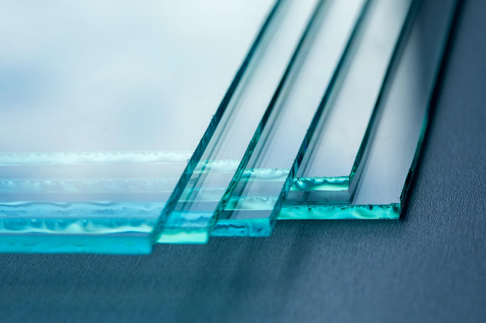

Back to home

What to do with: Glass
Glass products are almost always recyclable, but their lids almost never are! For glass jars ensure that your lids are disposed of (even metal lids are not recyclable unless given the appropriate stamp). For glass bottles, ensure that you remove all caps unless they are recyclable metal.
The exceptions to this rule are sheet glass and small pieces of broken glass, which should be put in the garbage.